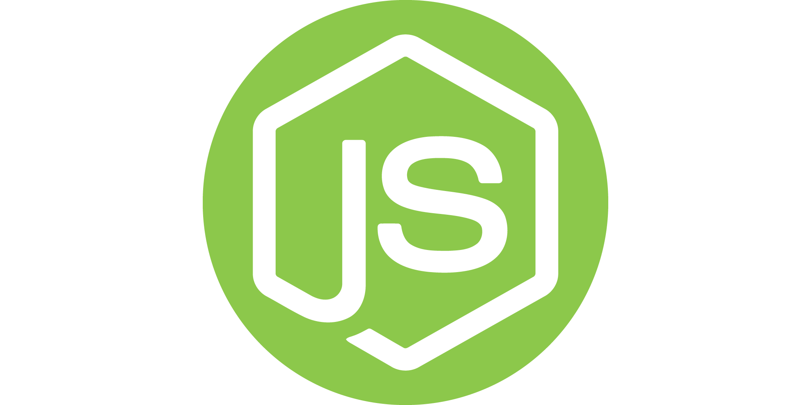
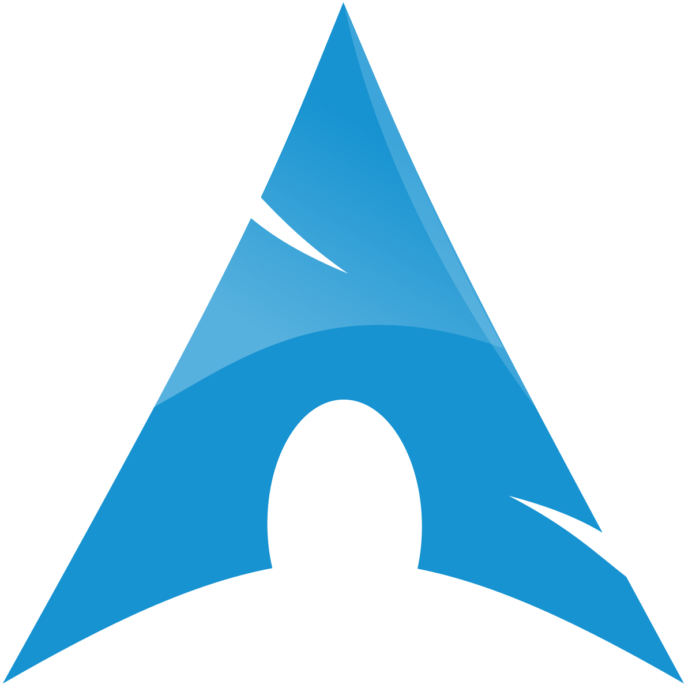

ПО для очного этапа
Google Chrome
Google Chrome – это веб-браузер, сочетающий в себе минималистичный дизайн и сложные технологии и позволяющий сделать работу в Интернете быстрее, проще и безопаснее
Скачать

Visual Studio Code
редактор кода для разных языков программирования. Он относительно немного весит, гибкий и удобный. В нем можно писать, форматировать и редактировать код на разных языках.
Скачать
Putty
клиентская программа для удаленного подключения к серверам. PuTTY использует для работы такие безопасные сетевые протоколы, как SSH, Telnet, SFTP, SCP и др.
Скачать
mintty (Cygwin)
терминальный эмулятор для Cygwin и других систем на базе Windows. Он предоставляет удобный и настраиваемый интерфейс для работы с командной строкой, поддерживает множество функций, таких как UTF-8, прозрачность окна, а также возможность использования различных шрифтов и цветов.
Скачать
GCC компилятор
набор компиляторов для различных языков программирования, разработанный в рамках проекта GNU. GCC является свободным программным обеспечением, распространяется в том числе FSF на условиях GNU GPL и GNU LGPL и является ключевым компонентом GNU toolchain.
Скачать

Компилятор языка C++ Windows Visual Studio 2022 Community Edition
Visual Studio 2022 Community Edition — бесплатная IDE от Microsoft для разработки на разных языках и платформах, с улучшенной производительностью и инструментами отладки.
Скачать

Cygwin/MinGW - Minimalist GNU for Windows
борник компиляторов и инструментов GNU для разработки программного обеспечения на Windows, предоставляющий средства для создания нативных Windows-приложений без необходимости использования сторонних библиотек.
Скачать
GO (версия 1.21)
версия языка программирования Go, выпущенная в августе 2023 года. Она включает улучшения производительности, новые возможности для обобщенного программирования, встроенные профилировщики и обновления стандартной библиотеки.
Скачать

Node(+npm) 20.13.1
серверная платформа на основе JavaScript, работающая на движке V8 от Google. Она позволяет создавать масштабируемые сетевые приложения, используя асинхронную архитектуру и неблокирующий ввод-вывод.
Скачать

Git
распределенная система управления версиями, которая означает, что локальный клон проекта — это полный репозиторий управления версиями
Скачать
goland
IDE от JetBrains, предназначенная для языка программирования Go. Она предлагает умные функции автодополнения кода, мощные инструменты отладки, встроенную поддержку систем контроля версий и обширную интеграцию с различными инструментами для разработки.
Скачать

Postman
сервис для создания, тестирования, документирования, публикации и обслуживания API. Он позволяет создавать коллекции запросов к любому API, применять к ним разные окружения, настраивать мок-серверы, писать автотесты на JavaScript, анализировать и визуализировать результаты запросов.
Скачать
Foxit PDF Reader
Средство для чтения PDF-файлов с самыми широкими возможностями в отрасли. Просматривайте, комментируйте, заполняйте и подписывайте PDF-документы из дома, офиса или в дороге с помощью удобной программы, доступной на компьютерах, мобильных устройствах и в Интернете.
Скачать
Виртуальные машины

VMWare
мощный инструмент для создания и управления виртуальными машинами на операционных системах Windows или Linux. Предоставляя широкий спектр возможностей, он идеален для разработчиков, тестировщиков и тех, кто изучает ИТ-технологии.
Скачать
VirtualBox
является многофункциональным инструментом для создания изолированных виртуальных машин, предлагает высокую производительность, а также является единственным профессиональным решением, которое находится в свободном доступе с открытым исходным кодом на условиях GNU General Public License (GPL) v.2.
Скачать
ОС Linux
Kali Linux
дистрибутив Linux на базе Debian, предназначенный для опытных пользователей и специалистов по безопасности, включающий набор программ для тестирования уязвимостей и угроз безопасности.
Скачать

Arch Linux
Arch Linux - независимо разработанный дистрибутив Linux, оптимизированный для архитектур i686- и x86-64 и предназначенный для опытных пользователей Linux. Приоритетами разработки являются простота, минимализм и совершенство кода
Скачать
IDE и редакторы кода
Visual Studio Code
редактор кода для разных языков программирования. Он относительно немного весит, гибкий и удобный. В нем можно писать, форматировать и редактировать код на разных языках.
Скачать

PyCharm
среда программирования для языка Python, или IDE. Средами называют программы, в которых можно писать, запускать и отлаживать код, устанавливать новые расширения и дополнительные модули. Это мощный многофункциональный инструмент для разработчиков.
Скачать
ИБ СОФТ

Wireshark
бесплатная профессиональная программа для анализа сетевой активности, изучения пакетов, просмотра сетевой статистики и составления отчётов
Скачать

Nmap
инструмент с открытым исходным кодом для исследования сети и аудита безопасности. Он был разработан для быстрого сканирования больших сетей, но также отлично подходит для отдельных хостов в сети.
Скачать
Burp Suite
это интегрированная платформа для тестирования безопасности веб-приложений как в ручном, так и в автоматических режимах. Работает на всех популярных операционных системах
Скачать
Антивирус

Kaspersky Free
БЕСПЛАТНАЯ базовая антивирусная защита для ОС Windows. Защитите компьютер без ущерба для производительности.
Скачать